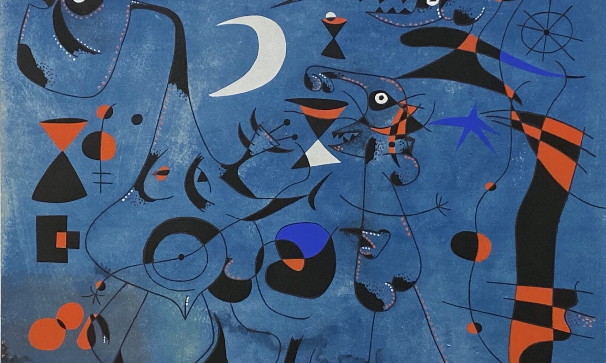
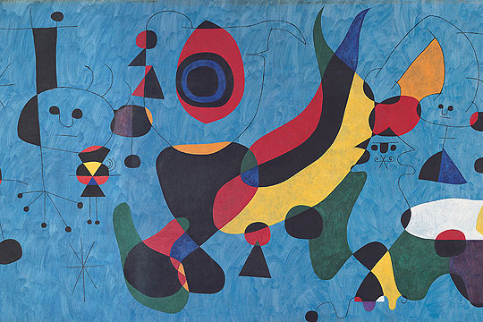
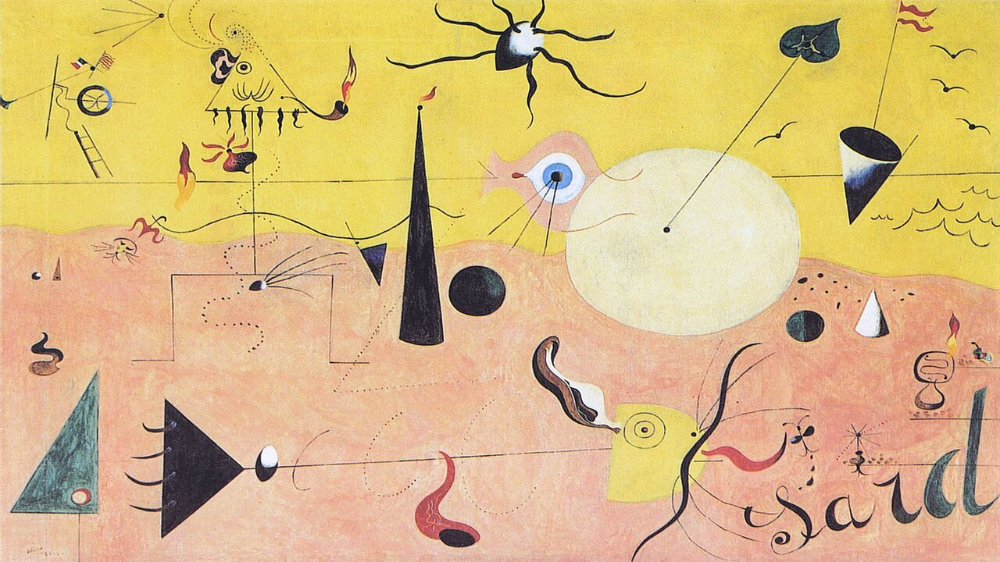
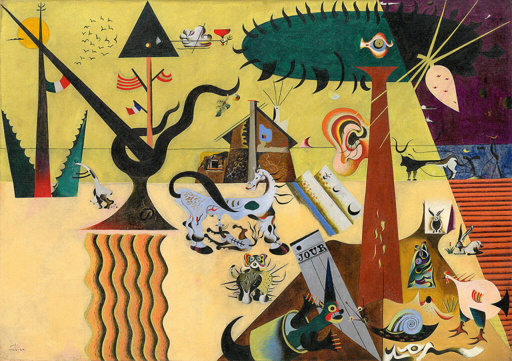
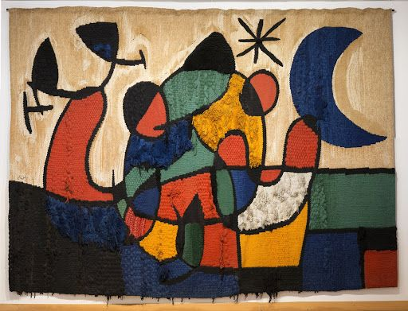
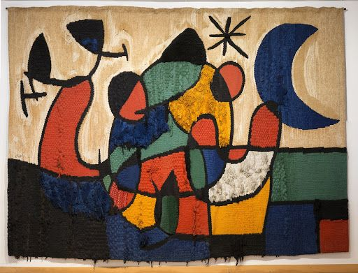

Joan Miró
Joan Miró i Ferrà(Barcellona, 1893–Palma di Maiorca, 1983) è stato uno degli autori più importanti di tutto il Novecento e ha dedicato la sua carriera a una continua sperimentazione artistica. La sua vicenda è stata spesso accostata all’avanguardia surrealista, di cui fece parte dal 1924 al 1929. L’immaginario artistico di Joan Miró è stato alimentato da influenze di vario genere, a partire da quelle più antiche, per esempio le pitture rupestri primitive, le opere africane e quelle cattoliche catalane. Tra i suoi modelli compaiono anche le pitture dei grandi maestri nordici del XV secolo, come Hieronymus Bosch, Edvard Munch, e Pablo Picasso. Data la grande fama del maestro catalano, i capolavori di Joan Miró sono conservati in diversi stati europei e non solo. Nel 1975 venne inaugurata a Barcellona la Fundació Joan Miró, al cui interno sono raccolte circa 10.000 opere, tra sculture, dipinti, disegni, tempere e tappezzerie. Sempre in Europa una delle città in cui sono presenti numerosi lavori dell’artista catalano è Parigi, dove le opere sono divise principalmente tra il Musée du Louvre e il Musée national d’Art moderne, Centre Georges Pompidou. Infine, diverse opere di Joan Miró sono conservate in numerosi musei statunitensi. Per esempio, a New York è possibile ammirare i capolavori dell’artista catalano sia al Solomon R. Guggenheim Museum, che al Museum of Modern art. Mentre a Buffalo, all’Albright-Knox Art Gallery, è conservato il Carnevale di Arlecchino.
    

Indietro